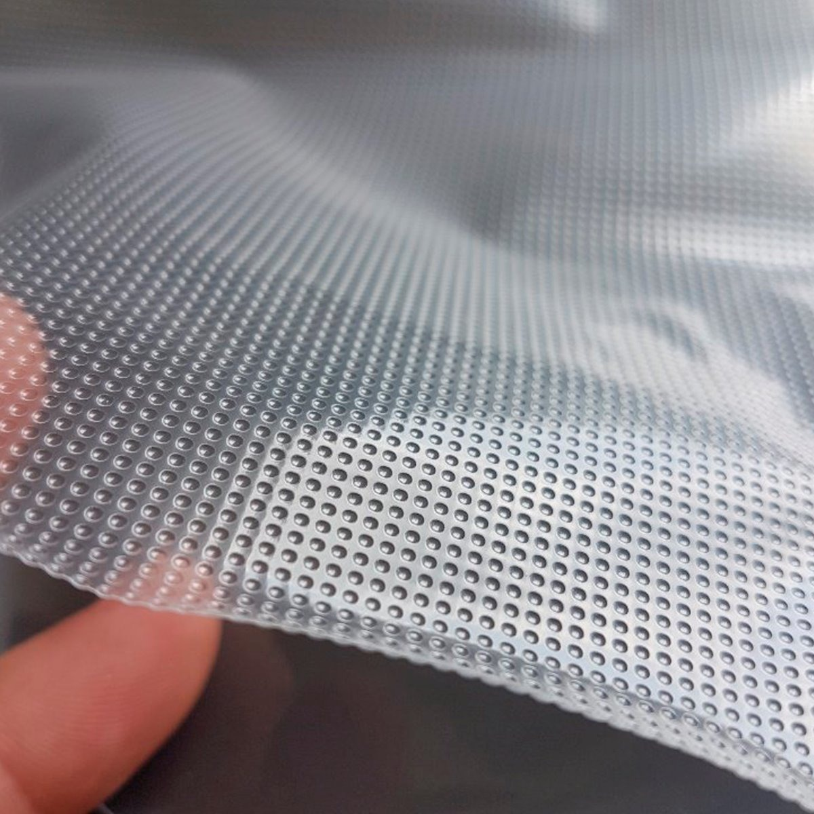

ENVASES
BOLSAS GROFADAS
Esta bolsa se utiliza para las envasadoras de tipo doméstico o externas. Cuentan con una superficie delantera completamente lisa y una composición de poliamida polietileno y de un micraje aproximado 90/105. Y una parte trasera rugosa, estriada o gofrada necesaria para la extracción del aire en este tipo de máquinas.
BOLSAS LISAS
Esta bolsa se utiliza para las envasadoras de tipo semi o profesional con campana. Y esta bolsa variará dependiendo del material que utilicemos y de lo que vayamos a envasar. La más común de todas estas bolsas es la que está fabricada en una composición de poliamida con polietileno. La poliamida se utiliza como barrera para evitar el escape de aire y porosidad de la bolsa. Ya que si no estaríamos hablando de una simple bolsa con polietileno y si hacemos un día la prueba veremos que va perdiendo el vacío poco a poco con el transcurso de los días.
Esta bolsa la encontramos en diversos espesores: 70, 90,120, 130,150 y 160 micras, que son los micrajes más comunes y comerciales. Su composición variará siempre dependiendo del fabricante de la bolsa. Por ejemplo. En el caso de la bolsa más solicitada que es la de 90 micras y que se utiliza para la mayoría de los envasados. Esta tiene una composición de 20 poliamida y 70 polietileno. La Poliamida proporciona a la bolsa su estanqueidad mientras que el Polietileno permite su soldadura.
Estas bolsas lisas también se pueden fabricar dos maneras mediante laminación: que es el contra colado de varias capas o láminas de material. O bien mediante coextrusión, qué es lo más común hoy en día. Por la que se unen los dos materiales desde la granza o material inicial del que se hace el plástico.